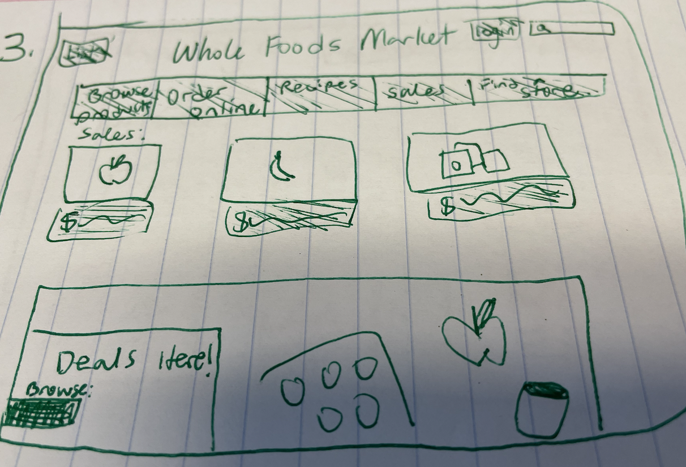
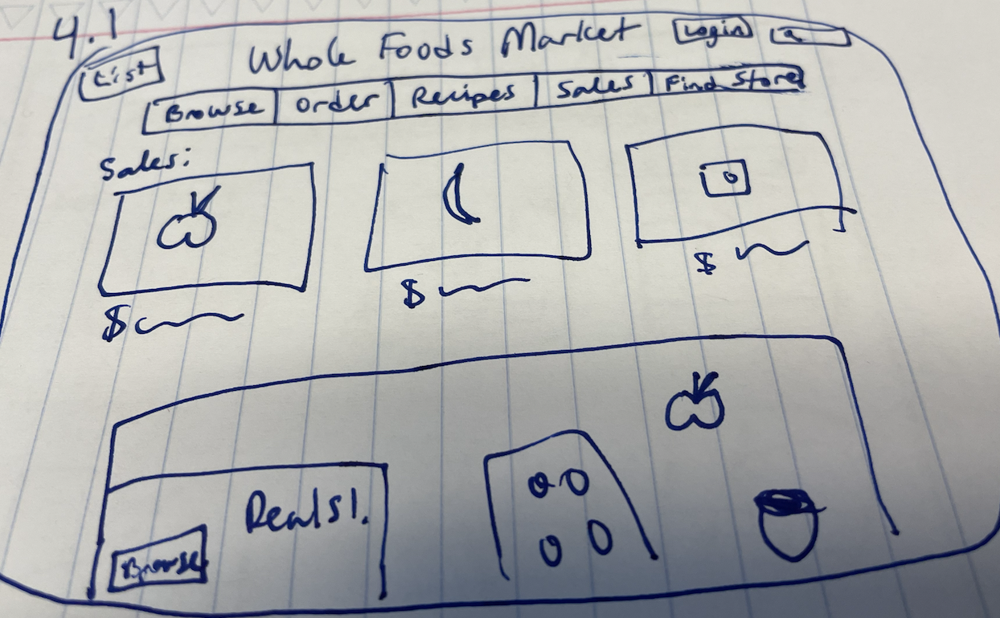
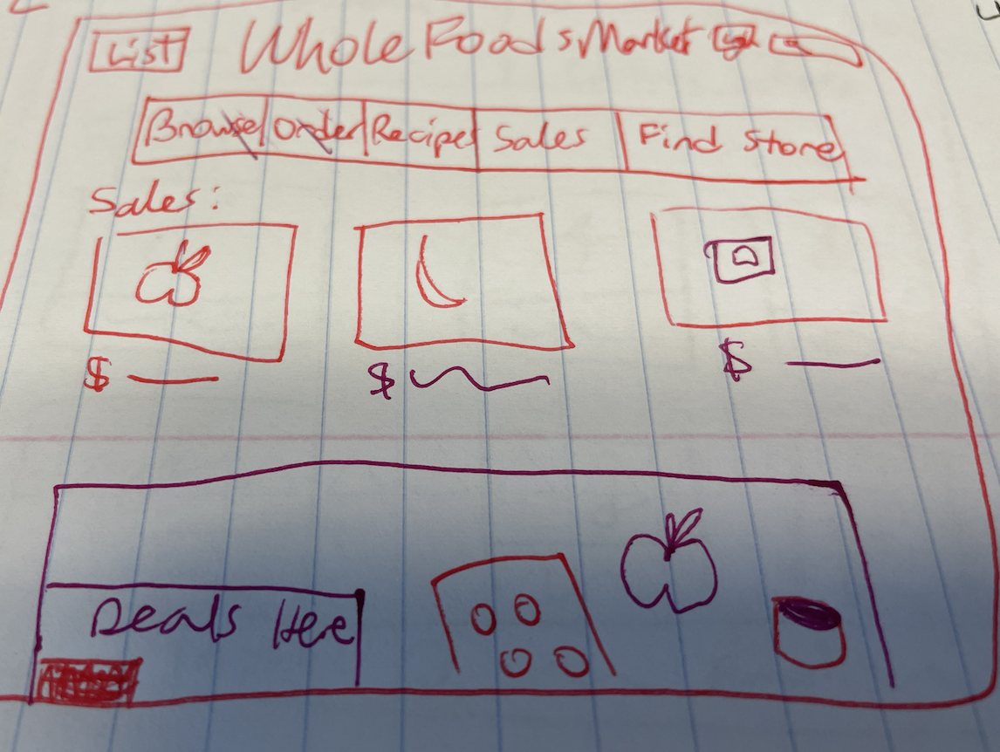
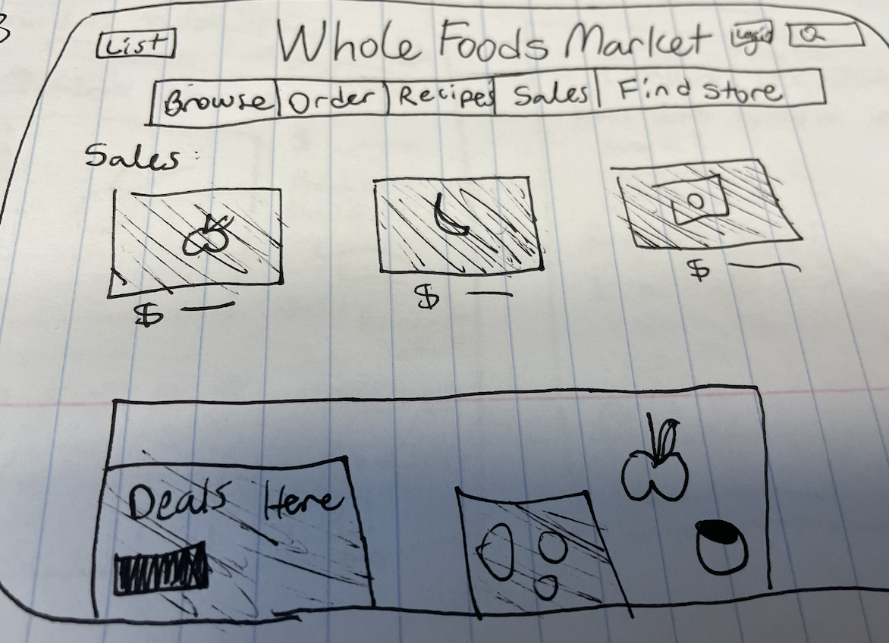

The mood that a user feels can change depending on what colors are used on the website.
I drew the Whole Foods site out on paper so we can just focus on key elements and their colors. On the drawing of the Whole Foods site, The primary usage of green and white for a lot of the site’s elements conveys a fresh, healthy feeling. I think the designers were hoping me to feel like their products are natural and clean. You are buying foods that are good for you and aren’t super processed (straight from the ground / Earth).
Let’s experiment and see how our mood changes by observing drawings of the Whole Foods homepage in different color schemes.
This drawing of the Whole Foods homepage was done in dark blue. Take 30 seconds to observe the dark blue details. This color scheme conveys feelings of calm. The blue is similar to a deep ocean blue, which evoke thoughts of cleansing or mystery. As the artist of the drawing, I was aiming to make viewers feel relaxed as they view the site.
This drawing of the site was done in bright red and magenta. Take a glance and observe the drawing. What feelings are evoked? This color scheme conveys power and is a demanding, commanding force. I was aiming to make viewers feel intimidated and evoke slight feelings of stress. A very different feeling compared to the other two drawings.
This last drawing was done in black. After looking at it, how do you feel? The plain black on white conveys feelings of sophistication, mystery, and strength. I was aiming to make users think like they are on a luxury, exclusive site and feel confident and strong doing so.
Whole Foods is a grocery store focused on selling organic, clean, foods. I would say the blue color scheme is the most effective. I define effective in this context as being the color scheme that makes users feel emotions most related to what the company does or how they should feel when shopping at Whole Foods. When users grocery shop at Whole Foods, you want them to feel calm and remind them that they are getting natural, healthy foods. The blue color, out of the red and the black color schemes, does the best job of doing so.